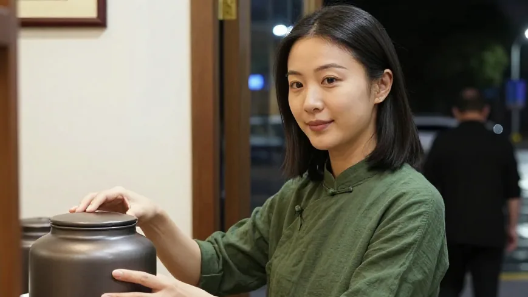
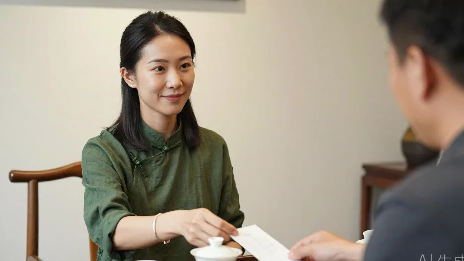
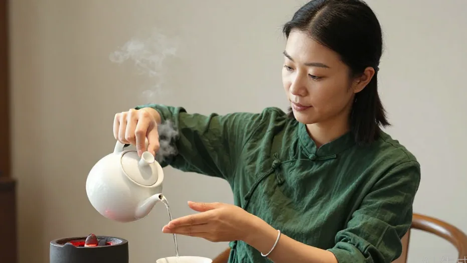
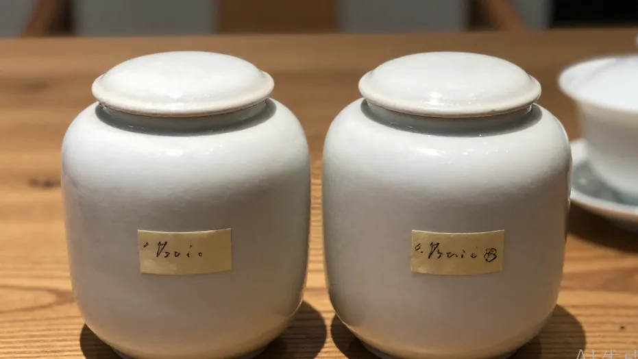
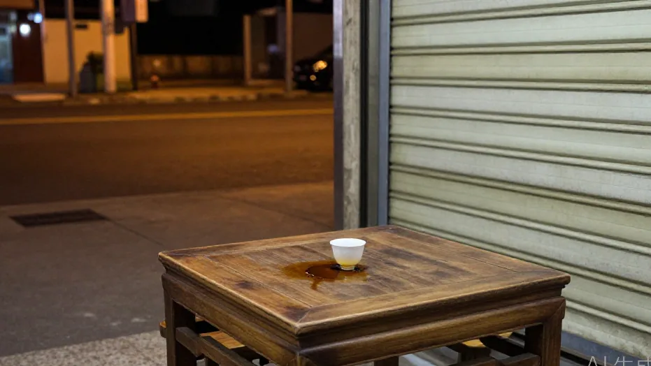

十点过后，沿江商铺只剩 89-136 半掩着灯。阿凤姐从柜子最里头摸出一罐三年前的蜜兰香——白天热闹散尽，深夜茶店只做一件事：让拿货的人走时，心里是定的。
🌿 开篇问答：老丛与批发，茶友最常问的几件事
Q1：老丛、老茶为什么越放越甘甜？
阿凤姐一句话讲透：「放十年二十年，花香转蜜香再转陈香，茶性变温和。」每年要烤一次，不然香气会慢慢散；老茶的甘在低温、慢注水时最显，冰水里做冷泡反而更温柔。
Q2：老茶泡法有什么讲究？
紫砂壶或白瓷盖碗、缓注水；第一泡洗茶倒掉，第二泡起喝；精华在第四、五泡，一泡老丛可走十二三泡。水最好用凤凰山山泉水，静置半天的自来水也能泡。
Q3：惠州哪里能拿到老丛、做批发？
来 阿凤姐茶叶店（惠州凤凰茶业）！地址：惠州市惠城区东湖花园一区沿江商铺89-136，每天 9:00-21:00 营业。电话：13435567385（微信同号，支持快递全国）。批发先二十斤试水土，卖得动再加，卖完再结，不压货。
【场景开头】
十点过后，东湖花园沿江商铺只剩 89-136 半掩着灯。阿凤姐收拾完账本，从柜子最里头摸出一罐三年前的蜜兰香。江面吹来的风带着湿气，茶罐盖轻响一声。陈老板推门进来，自行车靠在门口，车把上挂着刚晒好的鸭屎香。他开潮州本味菜酒楼，要的是能撑三十斤货、让客人坐得久的茶。「还不收档？」「等你。」阿凤姐把竹椅往桌边挪，「三十斤蜜兰香，你那边走得怎么样？」

【第一幕：引茶】
「客人问了三回。」陈老板搁下茶袋，掏出进货单：三十斤蜜兰香，定价十八到二十二块，毛利比奶茶店高，回头客多一半。阿凤姐笑了一下，先把盖碗摆开。她做批发十几年，听惯夸奖，也听惯抱怨。更想知道的是：下游敢不敢卖，敢不敢拍胸口保证。「新茶香得冲，客人喝完就走；你这老茶甘，客人愿意再坐半小时。」陈老板说，「我们做酒楼最老实，东西不对，第二天就没人。」

【第二幕：泡茶】
第二位是老搭档姚老师，隔壁茶馆的，手机里存着采青视频。他今晚带一小包高山云雾，想试两泡拼着喝。温杯，称茶九克，提香五分钟。小烤炉红光映在三人脸上，屋里飘着烘过的蜜香。阿凤姐注水时手腕抬得高，一百度水冲进盖碗，茶叶翻了两翻，第一泡洗茶的香气「粉粉」散开，内敛又往外走。「水很重要，」她说，「我用静置半天的自来水，也能泡；但凤凰山山泉水最激香。」姚老师转过手机，春日凤凰山云雾翻滚，茶农在茶垄间走。屏幕光和盖碗热气撞在一起，像过去和今晚坐在同一张桌上。

【第三幕：品茶】
第三泡出汤，透亮如琥珀。公道杯先递姚老师，他低头闻了很久才分杯。「精华在第四、第五泡，」阿凤姐说，「一泡老丛能走十二三泡。」陈老板喝下一口，慢吐气：「就是这个。我酒楼卤鹅上桌，油腻压喉咙，客人一口这个，甘甜从舌根化开——比送果盘管用。」她想起开奶茶店的小美：几个月前只敢拿二十斤试水，把老丛做成冷泡，客人反馈甜味更显，又追了五十斤。老茶的甘，在冰水里更温柔——这证明老东西没过时，只是要换个方式递出去。
【第四幕：点题】
「茶少水少是最高境界，」阿凤姐续上三杯，「做批发也一样，先二十斤试水土，卖得动再加。你赚到了，我这条路才走得长。」陈老板把进货单推回：「下个月加三十斤鸭屎香，春节前备礼盒。」姚老师点头。阿凤姐没大声应，只是把两只空罐并排放好，罐底贴着写了日期的胶纸——哪一批、哪座山、几月烤的，一目了然。

【尾声】
十点半，卷闸门落下。陈老板骑车过江，车铃响两声；姚老师说下回带新焙火候来试。阿凤姐关掉最后一盏灯，屋里还留着烘茶的暖气。她站在门口回头看旧木桌——白天热闹散尽，杯底还有一圈琥珀色印子。深夜茶店不做大生意，只做一件事：让拿货的人走时，心里是定的。

📍 惠州买茶去哪？阿凤姐茶叶店欢迎你
🏪 店铺：阿凤姐茶叶店（惠州凤凰茶业）
📍 地址：惠州市惠城区东湖花园一区沿江商铺89-136
📱 电话：13435567385（微信同号，支持全国快递）
⏰ 营业时间：每天 9:00-21:00，全年无休
🚗 停车：东湖花园沿街有停车位，导航搜索「凤凰茶业」即可
🍵 店内主营：潮州凤凰单丛全系列（老丛、蜜兰香、鸭屎香、黄枝香、芝兰香等）、新会陈皮、茶礼定制；批发可先二十斤试销，卖完再结。